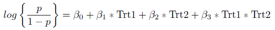
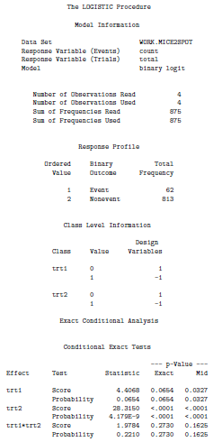

Exact Logistic Regression and Synergistic Effects
Carly attended the drop in biostatistics workshop with the following data:
| Trt1 |
Trt2 |
Count |
Total |
| 0 |
0 |
0 |
166 |
| 1 |
0 |
3 |
157 |
| 0 |
1 |
22 |
257 |
| 1 |
1 |
37 |
295 |
Where Trt1 = 1 signifies a mutation in atl-1, Trt2 = 1 signifies a mutation in zim-2, Count denotes the number of two spot emybryos, and Total denotes the total number of mice in each mutation group.
She is interested in the effect of two different mutations on the incidence of chromosome nondisjunction (i.e., the number of two spot embryos) in male mice. Specifically she wants to know what statistical method to use in order to determine whether or not the two mutant conditions produce a strictly additive effect or a synergistic effect on the occurence of chomosome nondisjunction.
To answer this question we first need to set up the model. The response variable here is whether or not there is chomosome nondisjunction in each mouse. This is a yes or no response and hence it is binary. A binary response variable suggests that we should use logistic regression. In order to determine whether the effect of the mutations is additive or syngergistic we are interested in whether or not the interaction term is significant. Hence our model of interest is:

where p denotes the probability of chomosome nondisjunction. If the coefficient for the interaction term (Trt1 * Trt2) is statistically significant then this would suggest that the effect of the two mutations is syngergistic, if the coefficient is not significant we can conclude that the effect is additive.
Typically this would be a fairly straight forward logistic regression. However, we note that in the table of the data one of the count cells is 0. The typical logistic regression relies on asymptotic results which are invalid when the sample sizes are small or the data are sparse. Due to the sparseness of our data we prefer to use Exact Logistic Regression in this case.
Exact Logistic Regression in SAS
Code:
DATA mice2spot;
INFILE 'C:\Users\jerinesp\Documents\GSR\Carlynn - Synergistic Effects\datamale.txt' dlm = '09'x ;
INPUT trt1 $ trt2 $ count total;
RUN;
PROC LOGISTIC DATA = mice2spot DESCENDING exactonly;
CLASS trt1 trt2;
MODEL count/total = trt1 trt2 trt1*trt2;
EXACT trt1 trt2 trt1*trt2;
RUN;
Output:

Interpretation:
The exact p-value given in the SAS output has been suggested to be too conservative hence we will base our interpretation on the mid p-value. From the above output we see that the main effects of the two mutations are statistically significant (with a mid p-value < 0.05). We also note that the interaction term is not statistically significant (mid p-value > 0.05) and hence we conclude that the effect of the mutations is additive rather than synergistic.
-- ErinEsp - 17 Aug 2011


{kind=link}